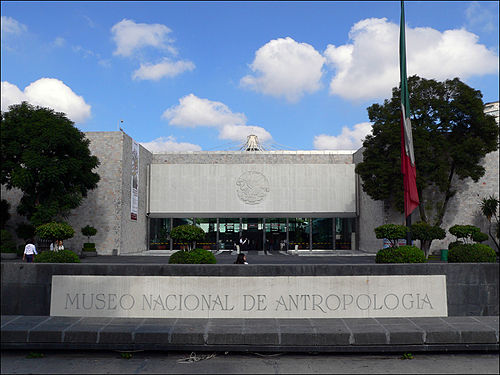
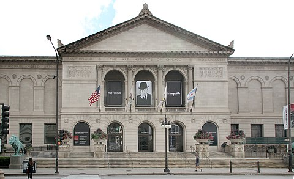
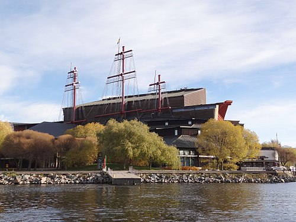

Contacto
Index
Museos mas conocidos del mundo
Museo Nacional del Prado
Galería Nacional de Arte
Museo Vaticano
Museo Británico
Galeria degli Uffizi

Museo Nacional de Antropología

Instituto de Arte de Chicago

Museo Vasa
Museo Nacional de Corea
Museo Nacional de Arte y Cultura Afroamericana